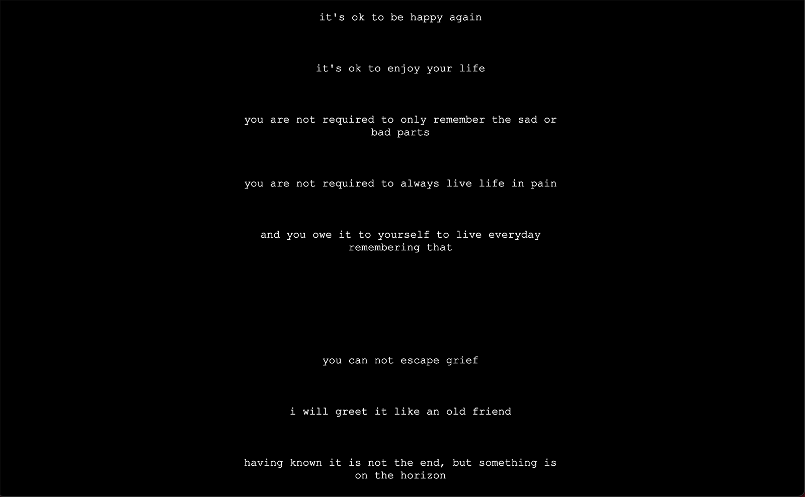

bri gallegos
net art


"g00d grief"
​"g00d grief" is an autobiographical blog-story hybrid
based around the experiences with grief.
the presentation, though simple in design,
is inspired by the blog style of the early 00's
and includes original poetry written over the years.
**tw: there is talk of self harm
and other disturbing or challenging content.
viewer discretion is advised**